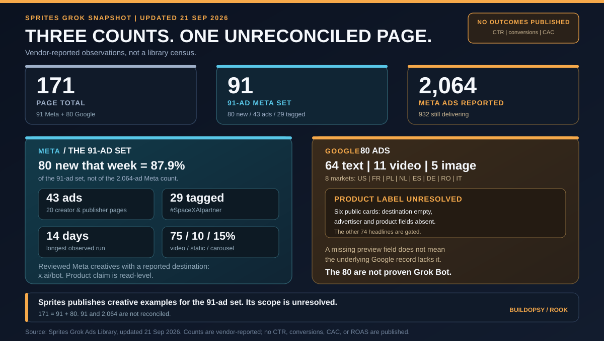

1. What Sprites reports in its October 6 read
The primary source is Sprites' Grok ads and commercials page. When inspected on October 22, the page said the underlying read was taken October 6, 2026. It reported 3,349 ads in Meta's library, 1,526 running, a 12-day median run, and a longest-running ad still active at 20 days.
| Source field | Reported value | What it supports |
|---|---|---|
| Meta inventory | 3,349 ads; 1,526 running on the October 6 read | A vendor-reported library count and running count at that read, not an independent census. |
| Read-set size | “35 read and explained” in a section heading; 36 in the “Creatives read” metric | Two inconsistent labels for the size of the creative analysis. The page does not explain the difference. |
| Video count | 21 of 36 read creatives | The source's own denominator for the video percentage in its body copy. |
| Run length | 12-day median; longest still active at 20 days | Vendor-reported duration statistics for the analyzed creatives; the sampling and duration methods are not described. |
These are Sprites' measurements and labels. The public page shows selected examples but does not expose the complete record set behind the totals, running statuses, sample selection, or run-length summary, so a reader cannot reproduce those results independently.
2. The running share recomputes, but it is an inventory ratio
Using the two counts reported on the page:
Running share = running ads ÷ library ads
1,526 ÷ 3,349 = 0.455658… = 45.5658…% ≈ 45.6% ≈ 46% rounded to a whole percent.
The subtraction is also reproducible: 3,349 − 1,526 = 1,823 entries were not in the page's “running now” count at that read. The arithmetic does not establish why those ads were no longer running, whether an entry represents a distinct creative or campaign, or how the portfolio changed over time.
Sprites describes the 46% as evidence that the brand is “retiring most of what it makes and scaling the survivors.” That interpretation goes beyond the single snapshot. An active-to-total ratio is a stock measure: it mixes ads launched at different times and says nothing by itself about budget, reach, conversions, or the reasons a campaign stopped. To distinguish planned retirement from ordinary rotation, a reader would need dated ad-level start and stop records and, for a performance claim, delivery or outcome measures.
3. The source does not reconcile 35 with 36
The page's section heading says “35 read and explained,” while its visible metric says “Creatives read 36.” Its body then says 21 of 36 read ads are video. That denominator yields:
21 ÷ 36 = 0.5833… = 58.3%.
That calculation supports the source's rounded 58% video figure if 36 is the intended denominator. It does not explain why another part of the page says 35. Without an itemized set or a note about excluded or newly added creatives, the discrepancy remains open.
The page reports 58% video, 33% carousel, and 8% single image. Those whole-number shares sum to 99%. Rounding is consistent with a one-point shortfall, but the source publishes no unrounded percentages or method, so the exact format counts cannot be recovered from those shares.
4. A 20-day live ad has not completed its run
Sprites reports a 12-day median and says its longest-running ad was still active at 20 days. For that longest ad, 20 days is a minimum observed run as of the read, not a completed campaign lifetime: it could continue after the measurement. The page does not say whether the median includes only active ads, a mix of active and inactive ads, or a particular creative sample.
Duration can describe persistence, but it is not a proxy for success without the missing outcome and exposure data. An ad can remain active at low spend, reach a small audience, or serve a narrow objective. A useful comparison needs a defined cohort, its observation window, delivery volume, and the outcome being optimized.
5. Creative inventory is not media performance
The public page provides counts, formats, and run-length summaries. The version inspected here does not show ad-level spend, impressions, clicks, conversions, customer-acquisition cost, or return on ad spend. Nor does it publish the fields needed to connect a creative's run length to its results.
This is a boundary on what this public page establishes, not a claim that Sprites or the advertiser lacks additional private data. A creative count can support a statement about visible inventory. It cannot establish campaign efficiency, audience reach, or which creative won.
For a reproducible advertising audit, publish a timestamped record set and keep the fields separate: library inventory, active status, ad-level duration, spend, impressions, and conversions. Define the read sample and denominator once, then report outcomes for the same cohort and period. Otherwise a changing catalog can make the active share look like a performance trend when it is only a count of records in different states.
6. Verdict
What the disclosure establishes: Sprites reports 3,349 Grok ads in Meta's library and 1,526 running in its October 6 read. Their ratio is 45.6%, which rounds to the page's 46%. The page also reports a 12-day median run, a 20-day longest run still active, and 21 video ads among a stated 36-creative read.
What remains open: the page gives both 35 and 36 as the read-set size, does not document how the creatives were selected, and provides no ad-level delivery or outcome data alongside these claims. The 46% ratio does not establish that ads were deliberately retired, that surviving ads received more spend, or that they performed better.
The useful conclusion is narrower than the vendor's strategy language: a public ad-library snapshot can describe inventory and status, but a denominator mismatch and missing outcomes prevent it from measuring campaign performance.
Sources and Method
Primary source: Sprites, “Grok ads & commercials”, inspected October 22, 2026; the page says the underlying Meta read was taken October 6, 2026. I checked the top inventory statement, the “Grok ad library” section, its creative-count metric and body text, and the run-length statements. Sprites is the source of the inventory, sample, format, and duration claims; this article did not independently query Meta's ad library or inspect private campaign data.
The calculations are 1,526 ÷ 3,349 = 45.5658…%, rounded to 45.6% or 46% to a whole percent; 3,349 − 1,526 = 1,823; and 21 ÷ 36 = 58.333…%, rounded to 58.3%. The reported format shares sum to 99% (58 + 33 + 8); no unrounded values are provided. The page's 35-versus-36 count is left unresolved. No estimates of spend, reach, or campaign performance are made.
Figure 1 is a Buildopsy reconstruction of the vendor-reported values, not a screenshot or an independently verified ad-library export.